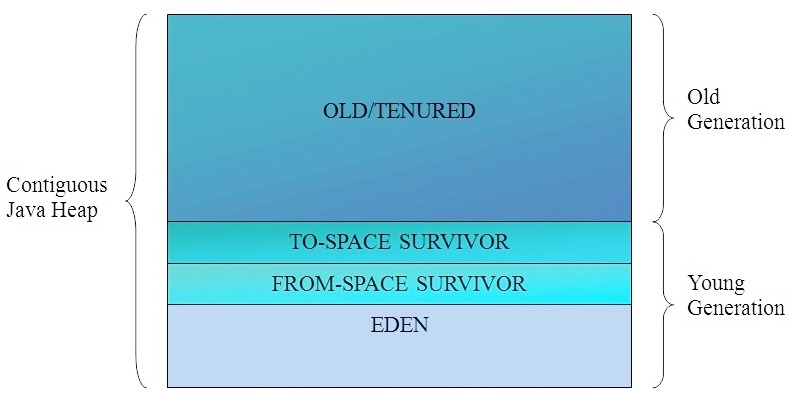
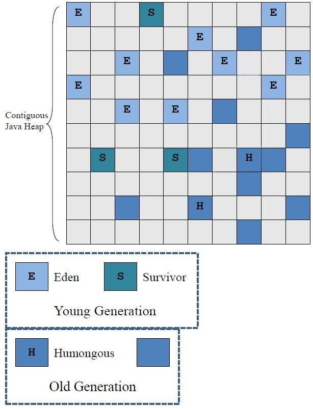
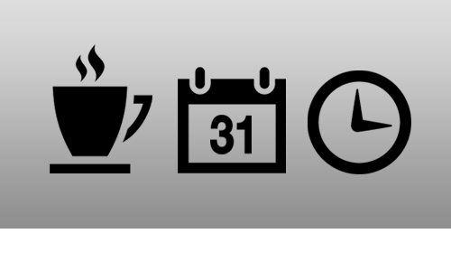
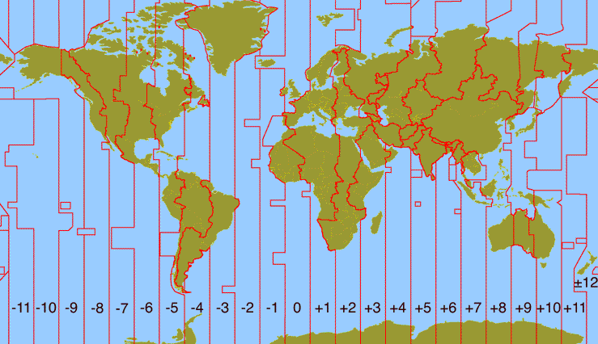
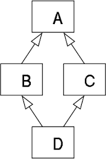
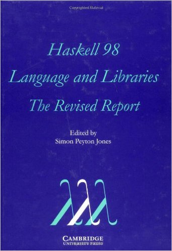
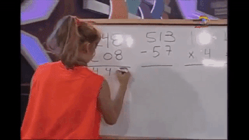
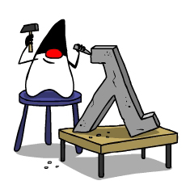
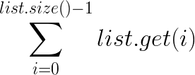

Formation Java 8
Lucas Coatanlem - Loïc Ortola
Planning de la formation
- Introduction
- Java 7
- Projet Coin
- G1GC
- Projet
- Java 8
- Date & Time
- Lambdas
- Streams
- Collectors
- CompletableFuture
Introduction
Java 6
- Décembre 2006 → Avril 2013
- 45 updates (113 non-publiques)
- HotSpot VM 10 → 20
Java 7
- Juillet 2011 → Avril 2015
- 80 updates (101 non-publiques)
- HotSpot VM 21 → 23
Java 8

- Mars 2014 → aujourd'hui
- 92 updates
- Pas de nouvelle VM
Java pains
- Langage verbeux
- API Date & Time
- Pas de fonctionnel
- Algorithmes Map Reduce
Java pains
- Gestion concurrence / threads
- Classpath
- Taille du JDK
- API Logging
Java 7
- Projet Coin
- G1GC
- NIO.2
- Autres nouveautés
Projet Coin
Projet Coin
Operateur diamond <>
Map<String,List<String>> myMap =
new HashMap<String,List<String>>();Map<String,List<String>> myMap = new HashMap<>();Projet Coin
Varargs et Generics
Suppression des warnings du compilateur :
-Xlint:varargs@SafeVarags@SuppressWarnings({"unchecked", "varargs"})Projet Coin
String & switch
String myString = "Bonjour!";
switch(myString) {
case "Bonjour!" :
continue;
default :
break;
}Projet Coin
Littéraux
Littéraux numériques :
int x1 = 1_000;int x1 = 0b1111101000;Projet Coin
Try with resources / Catch multiples
try (Statement stmt = connection.createStatement()) {
/* Code métier... */
} catch (SQLException e1) {
/* Gestion SQLException */
} catch (Exception e2) {
/* Gestion Exception */
}Garbage Collection
Garbage First (G1GC)
NIO.2
java.nio.file >> java.io.File
- Gestion propre des exceptions
- Accès complet au système de fichiers
- FileSystem / FileStore
- Méthodes utilitaires
- DirectoryStream
NIO.2
java.nio.channels
- Ajout des AsynchronousChannel
- AsynchronousFileChannel
- AsynchronousSocketChannel
- AsynchronousServerSocketChannel
- Utilisations :
Future<V> operation(args);
void operation(args, A attachment,
CompletionHandler<V,? super A> handler);Autres nouveautés
- Support des langages dynamiques
- Compression des pointeurs 64bits
- API java.util.concurrent mise à jour
- Timsort >> merge sort (Collections & arrays)
- Deployment Rule Set
Autres nouveautés
- Librairies algorithmes de cryptage elliptiques
- Adaptation de XRender aux nouveaux GPUs
- API pour les fonctionnalités graphiques de Java 6
- Librairies de protocoles réseau (SCTP...)
- Upstream mis à jour en XML et Unicode
Projet
Java 8
- Date & Time
- Lambdas
- Streams
- Collectors
- CompletableFuture
Date & Time
java.util.Date
- Années : offset depuis 1900
- Mois : index à partir de 0
- Date : combinaison de date + time
- Dates mutables → pas thread-safe
- Internationalisation impossible
La quasi-totalité des méthodes sont dépréciées...
Date & Time
java.util.GregorianCalendar
- Mois : index à partir de 0
- Calendrier : pas formattable
- Calendar mutable → pas thread-safe
- Calendar : pas type-safe
- Stockage des données :
- millisecondes depuis epoch
- set de champs
Date & Time
Trouvez l'erreur!
Date date = new Date(2016,7,13,11,00);
System.out.println(date); /* ??? */
System.out.println(date.getTime()); /* ??? */
System.out.println(date.getDay()); /* ??? */
System.out.println(date.getDate); /* ??? */
System.out.println(date.getYear()); /* ??? */
Date date2 = new Date(2016,8,13,11,00);
System.out.println(new Date(date2.getTime()-date.getTime()));
/* ??? */Date & Time
Trouvez l'erreur!
Date date = new Date(2016,07,13,11,00);
System.out.println(date); /* Sun Aug 13 11:00:00 CEST 3916 */
System.out.println(date.getTime()); /* 61429222800000 */
System.out.println(date.getDay()); /* 0 */
System.out.println(date.getDate); /* 13 */
System.out.println(date.getYear()); /* 2016 */
Date date2 = new Date(2016,8,13,11,00);
System.out.println(new Date(date2.getTime()-date.getTime()));
/* Sun Feb 01 01:00:00 CET 1970 */Date & Time

- Classes non-mutables
- Séparation des domaines Date & Time
- Problème des time zones
- Séparation des chronologies : pas tous en ISO-8601
Date & Time
Local Dates & Times
LocalDateTime myDateTime = LocalDateTime.now();LocalDate myDate = LocalDate.of(2016, Month.JULY, 1);LocalDate myDate = LocalDate.ofEpochDay(150);LocalTime myTime = LocalTime.of(14, 00);LocalTime myTime = LocalTime.parse("14:00:30");Date & Time
Period & Duration
LocalDate myNewDate = myDate.plusYears(10);
Period weekly = Period.ofWeeks(1);
myNewDate.plus(weekly); // Attention, non-mutableLocalTime myNewTime = myTime.plusMinutes(30);
Duration everyHour = Duration.ofHours(1);
myNewTime.plus(everyHour); // Attention, non-mutableDate & Time
Timezones

ZoneId zone = ZoneId.of("Europe/Paris");
ZonedDateTime myZonedDateTime =
ZonedDateTime.of(myDate, myTime, zone);Méthodes par défaut
Objectif :- Ajouter un comportement par défaut dans une interface
- Ajouter une méthode uniquement dans l'interface
public interface Animal {
private String name;
/* Les méthodes existantes */
default void printName() {
System.out.println(this.name);
}
}Méthodes par défaut

- Héritage multiple d'implémentations → conflits :
- L'implémentation de la classe
- L'implémentation de l'interface la plus spécifique
- L'implémentation d'un appel explicite
- Méthodes statiques autorisées dans les interfaces
Programmation fonctionnelle
1930s
Alonzo Church développe le lambda-calcul, une théorie des fonctions, simple mais puissanteProgrammation fonctionnelle
1930s

Programmation fonctionnelle
1950s
John McCarthy développe Lisp, le premier langage fonctionnel, sous l'influence du lambda-calcul, mais impur (en conservant l'affectation des variables)Programmation fonctionnelle
1960s
Peter Landin développe ISWIM (If You See What I Mean) :- premier langage de programmation fonctionnel pur
- fortement basé sur le lambda-calcul
- sans affectation de variables
Programmation fonctionnelle
1970s
John Backus développe FP, un langage de programmation fonctionnel qui pose l'accent sur les fonctions d'ordre supérieur et sur l'intégration avec le raisonnement sur les programmesProgrammation fonctionnelle
1970s
Robin Milner et son équipe développent ML, le premier langage fonctionnel moderne, qui introduit l'inférence de type et les types polymorphesProgrammation fonctionnelle
1985
Gérard Huet et son équipe à l'INRIA développent CAM, une version du langage ML destiné à s'intégrer avec le système Coq (preuves de programmes)Programmation fonctionnelle
1987

Un comité international de chercheurs débute le développement de Haskell, un langage fonctionnel paresseux standard qui aboutira en 2003 avec le rapport Haskell 98Programmation fonctionnelle
Principes
- Immutabilité / pas d'effets de bord → code plus robuste et plus stable
- Fonctions d'ordre supérieur, propriétés (une au moins) :
- une ou plusieurs fonctions en paramètre
- renvoie une fonction
- Lambdas / fonctions anonymes → code concis, clair et robuste
- Récursivité / fonction s'appelant elle-même → code plus lisible et plus court
Programmation fonctionnelle
Langages implémentant certains concepts de la programmation fonctionnelle :- Javascript
- PHP
- Scala
- Swift
- Ruby
- Et maintenant... Java!
Calculons...
public interface Operation {
public Integer compute(Integer x, Integer y);
}class Addition implements Operation {
@Override
public Integer compute(Integer x, Integer y) { return x+y; }
}
class Subtraction implements Operation {
@Override
public Integer compute(Integer x, Integer y) { return x-y; }
}
class Multiplication implements Operation {
@Override
public Integer compute(Integer x, Integer y) { return x*y; }
}Une interface et trois implémentations
Calculons...

public class Calculator {
public static Integer compute(Integer x, Integer y,
Operation operation) { return operation.compute(x,y); }
public static void main(String[] args) {
Integer add = compute(3,7,new Addition());
Integer sub = compute(10,5,new Subtraction());
Integer mul = compute(4,6,new Multiplication());
System.out.println(add + " " + sub + " " + mul + " ");
/* 10 5 24 */
}
}
Calculons...
Réduisons ce code!
public class Calculator {
public static Integer compute(Integer x, Integer y,
Operation operation) { return operation.compute(x,y); }
public static void main(String[] args) {
Integer add = compute(3,7,new Operation(){
@Override
public Integer compute(Integer x, Integer y) {
return x+y;
}
});
Integer sub = compute(10,5,new Operation(){ ... });
Integer mul = compute(4,6,new Operation(){ ... });
System.out.println(add + " " + sub + " " + mul + " ");
/* 10 5 24 */
}
}Code toujours long, et pas très clair...
Calculons...
Mais alors, ces lambdas ?
public interface Operation {
public Integer compute(Integer x, Integer y);
}public class Calculator {
public static Integer compute(Integer x, Integer y,
Operation operation) { return operation.compute(x,y); }
public static void main(String[] args) {
Integer add = compute(3,7, (x,y) -> x+y );
Integer sub = compute(10,5, (x,y) -> x-y );
Integer mul = compute(4,6, (x,y) -> x*y );
System.out.println(add + " " + sub + " " + mul + " ");
/* 10 5 24 */
}
}Lambdas
"Interface fonctionnelle"
java.util.function
- Ne possède qu'une unique méthode
- Type des paramètres et type de retour compatibles
- Exceptions jetées compatibles
- Annotation @FunctionalInterface : vérification à la compilation c'est une "interface fonctionnelle"
Pattern Map → Filter → Reduce
- Map :
- Input : List<T>
- Output : List<U>
- Même nombre d'éléments
- Filter :
- Input : List<T>
- Output : List<T>
- Moins d'éléments
- Reduce : agrégation
- Input : List<T>
- Output : un seul élément
Lambdas

public class Person {
private String name;
private int age;
/* Constructeurs */
/* Getters - Setters */
}List<Person> persons =
new ArrayList<>();Moyenne d'âge des personnes de plus de
25 ans?
Java 6 : la programmation impérative
int sum = 0;
int n = 0;
int average = 0;
for (Person person : list) {
if (person.getAge() >= 25) {
n++;
sum += person.getAge();
}
}
if (n > 0) {
average = sum / n;
}
return average;Lambdas
Map
public interface Mapper<T,U> {
public U map(T t);
}Mapper<Person,Integer> mapper = new Mapper<>() {
public Integer map(Person p) {
return p.getAge();
}
}Mapper<Person,Integer> mapper =
(Person person) -> { return person.getAge(); }mapper = Person::getAge; /* méthode non statique */Lambdas
Filter
public interface Predicate<T> {
public boolean filter(T t);
}Predicate<Integer> predicate = new Predicate<>() {
public boolean filter(Integer i) {
return i >= 25;
}
}Predicate<Integer> predicate = age -> age >= 25;
/* Le type des paramètres peut être omis */
/* Les accolades et le mot-clef "retour" peuvent être
omis s'il n'y a qu'une ligne de code */Lambdas
Reduce
public interface Reducer<T> {
public T reduce(T t1, T t2);
}Reducer<Integer> reduction = new Reducer<>() {
public Integer reduce(Integer i1, Integer i2) {
return i1 + i2;
}
}Reducer<Integer> reduction = (i1,i2) -> i1 + i2;
reduction = Integer::sum; /* nouvelle méthode statique */Lambdas

List<Person> persons = ... ;
int sum = persons.map(mapper)
.filter(predicate)
.reduce(0,reduction);Lambdas

- API optimisée sans toucher au code
- Liste dupliquée, deux fois
- Pas de possibilité d'évaluation lazy
Stream
int sum = persons.stream() /* Retourne un Stream */
.map(Person::getAge)
.filter(a -> a >= 25)
.reduce(0, Integer::sum);Stream
Une interface paramétrée
- Un stream :
- ne porte pas de données → on déclare des opérations
- ne peut pas modifier sa source → traitements parallèles possibles
- traite ses données de façon lazy → optimisation des opérations
- Une source peut être infinie ou non bornée → garantie calculs en temps fini
→ mécanisme pour déclencher les traitements ?
Stream

Collection<String> collection = ... ;
Stream<String> stream = collection.stream();Stream<String> stream =
Arrays.stream(new String [] {"one", "two", "three"});Stream<String> stream = Stream.of("one", "two", "three");Stream.empty(); /* vide */
Stream.of(T t); /* un seul élément */
/* et beaucoup d'autres manières */Stream
Opérations sur les streams
- Opérations intermédiaires → map, filter
- Opérations terminales, déclenchent le traitement → reduce
- Opération Stateless → pas besoin de plus d'infos que ce que contient le stream
- Opérations Stateful → une variable (compteur) peut être partagée
Stream
Etats des streams
- sized → cardinal connu
- ordered → ordre important (List)
- distinct → pas de doublons (Set)
- sorted → trié (SortedSet)
Certaines opérations peuvent changer cet état,
d'autres ne font rien → première optimisation
Stream
Récapitulatif
- Opérations intermédiaires ou terminales
- Seule une opération terminale déclenche les traitements
- Une seule opération terminale est autorisée
- Un stream ne peut être traité qu'une seule fois
Si besoin, construire un autre stream
Réduction simple
int sum = persons.stream()
.mapToInt(Person::getAge) /* .map(Person::getAge) */
.filter(a -> a >= 25)
/* .mapToInt(Integer::intValue) */
.sum();- Valeur par défaut pour une liste vide : 0
- Applicable en passant par un IntStream
Réduction mutable
Une réduction mutable nécessite :- un container : Collection ou StringBuilder
- un moyen d'ajouter un élément au container
- un moyen de fusionner deux containers
Utilisation d'une classe helper → Collectors
(java.util.stream)
Collectors
Pour les réductions...
Double average = persons.stream()
.collect(Collectors.averagingDouble(Person::getAge));Long count = persons.stream().collect(Collectors.counting());String names = persons.stream().map(Person::getName)
.collect(Collectors.joining(", "));Set<Person> personsSet = persons.stream().collect(Collectors.toSet());Collectors
L'API Comparator
Optional<Person> optionalPerson = persons.stream().collect(
Collectors.maxBy(Comparator.comparing(Person::getAge)));Comparator<Person> comparator = Comparator.comparing(Person::getName)
.thenComparing(Person::getAge);Collectors
Pour le mapping...
Construction du mapping :- Fonction mappant les éléments du Stream
- Collecteur appliqué aux valeurs mappées → le "downstream"
Set<Integer> personSet = persons.stream().collect(
Collectors.mapping(Person::getAge, Collectors.toSet()));Collectors
groupingBy
Construction via des tables de hachage- méthode de construction des clefs
- par défaut, éléments rangés dans une liste
- on peut spécifier un downstream
Map<Integer, Long> map = persons.stream().collect(
Collectors.groupingBy(
Person::getAge, Collectors.counting()));Collectors
partitionningBy
Construction d'une Map à partir d'un prédicat- deux clefs : true et false
- on peut ajouter un downstream
Map<Boolean, TreeSet<String>> myMap = persons.stream()
.collect(Collectors.partitioningBy(
p -> p.getAge() >= 25,
Collectors.mapping(
Person::getName,
Collectors.toCollection(TreeSet::new)
)
);Collectors
collectingAndThen
Collecte les données avec un downstream→ applique une fonction : "finisher"
→ indispensable pour retourner des collections immutables
Set<Map.Entry<Integer, List<Person>>> set = persons.stream().collect(
Collectors.collectingAndThen(
Collectors.groupingBy(Person::getAge), /* downstream */
Map::entrySet /* finisher */
);Valeurs par défaut
Réduction de l'ensemble vide & élément neutre- Quelle est la valeur par défaut de max() ? → il n'y en a pas...
- Quel type lui donner ?
- int : valeur par défaut → 0
- Integer : valeur par défaut → null
OptionalInt : il peut ne pas y avoir de résultat
Optional
- Optional<T>
- OptionalInt, OptionalLong, OptionalDouble
OptionalInt optionalMax = persons.stream()
.mapToInt(Person::getAge)
.filter(a -> a >= 25)
.max();Optional
Traitements
- Tester s'il contient une valeur
int max = optionalMax.isPresent() ? optionalMax.get : 100;- Lire la valeur ou jeter une exception
int max = optionalMax.getAsInt(); /* throws NoSuchElementException */- Lire la valeur ou retourner une valeur par défaut
int max = optionalMax.orElse(100); /* returns 100 if no value */- Lire la valeur ou jeter une exception
int max = optionalMax.orElseThrow(exceptionSupplier); Parallélisation
- Java 7 : Fork/Join
- division des sets de données
- soumission de sous-tâches au pool de threads
→ code complexe et pas toujours performant
- Java 8 :
Stream<String> stream = collection.parallelStream();Stream<String> stream = collection.stream().parallel();Performances : la boucle for
List<Long> list = new ArrayList<>(10_000_000);
for (int i = 0; i < 10_000_000; i++) {
list.add(ThreadLocalRandom.current().nextLong());
}- Série : 270 ms
Performances : utilisation de limit
Stream<Long> stream =
Stream.generate(() -> ThreadLocalRandom.current().nextLong());
List<Long> list =
stream.limit(10_000_000).collect(Collectors.toList());- Série : 310 ms
- Parallèle : 500 ms
Performances : utilisation de longs
Stream<Long> stream =
ThreadLocalRandom.current()
.longs(10_000_000)
.mapToObj(Long::new);
List<Long> list = stream.collect(Collectors.toList());- Série : 250 ms
- Parallèle : 320 ms
Parallélisation
- Simple
- Presque gratuit
- Calculs supplémentaires
- Opérations Stateful → performances dégradées
- Tous les coeurs
- Large sets de données
Opérations mal configurées → calculs inutiles
→ performances dégradées
Concurrence
Java 5 et ses classes utilitaires
- Synchronisation & sections critiques
- Gestion des taches asynchrones → modèle de threads, queues bloquantes
- Callable (tache) → Executor → Future (état de la tache)
Concurrence
Le framework Executor
public class Main {
public static void executeRunnables(final ExecutorService serv,
List<Runnable> runnables) {
for(Runnable r : runnables) { serv.execute(r); }
serv.shutdown();
}
public static void main(String[] args) {
List<Runnable> runnables = new ArrayList<Runnable>();
runnables.add(new MyRunnable());
runnables.add(new MyRunnable());
runnables.add(new MyRunnable());
runnables.add(new MyRunnable());
ExecutorService serv = Executors.newFixedThreadPool(10);
executeRunnables(serv, runnables);
}
}La gestion des threads est automatique
Future
public class Main {
public static void main(String[] args) {
ExecutorService serv =
Executors.newSingleThreadExecutor();
Future<Integer> future = serv.submit(new MyCallable());
try {
System.out.println("Result of the Callable"
+ future.get()); /* Blocking call */
}
catch (InterruptedException e) { e.printStackTrace(); }
catch (ExecutionException e) { e.printStackTrace(); }
System.out.println("After submit");
serv.shutdown();
}
}On peut maintenant renvoyer des résultats ou jeter des exceptions et appeler des méthodes dans différents threads
Future
Java 6 : La limite des tâches asynchrones...
- La méthode get() est bloquante → résultat indisponible tant que tout n'est pas chargé
- Pas de méthode de callback
- Seul le thread associé au Future peut alimenter le résultat
Future
Java 7 : CompletionService
Runnable → ExecutorCompletionService → FutureTask- Exécution dans l'ordre de complétion (pas l'ordre d'appel)
- Possibilité de faire un callback
- Affichage des données au fur et à mesure
Une execution multi-threadée classique
public class Main {
public static void main (String[] args) {
/* myTask implements Callable<V> */
List<Callable<Integer>> tasks = new ArrayList<>();
Callable<Integer> task1 = new MyTask(5);
Callable<Integer> task2 = new MyTask(10);
Callable<Integer> task3 = new MyTask(2);
tasks.add(task1);
tasks.add(task2);
tasks.add(task3);
ExecutorService serv =
Executors.newFixedThreadPool(10);
resolve(serv, tasks);
}
public static void resolve( ... ) { /* Implementation */ }
}ExecutorCompletionService
public static void resolve(final ExecutorService serv,
List<Callable<Integer>> tasks) {
CompletionService<Integer> completionServ =
new ExecutorCompletionService<>(serv);
List<Future<Integer>> futures = new ArrayList<>();
try {
for(Callable<Integer> t : tasks)
futures.add(completionServ.submit(t));
for (int i = 0; i < tasks.size(); ++i) {
try {
res = completionServ.take().get();
if (res != null) System.out.println(res);
} catch (ExecutionException ignored) {} }
} catch (Exception e) { e.printStackTrace(); }
finally { serv.shutdown(); }
}Un mix entre Future et CompletionStage → CompletableFuture
- N'importe quel thread peut alimenter le résultat
- Possibilité de réagir à un évènement asynchrone pour débloquer un CompletableFuture
- Enregistrement de callbacks ou de closures utilisables lorsqu'un résultat sera disponible
- Tant que le thread de pool n'est pas saturé, on peut executer des traitements en tâche de fond
- L'exception ne peut pas être transmise dans le thenApply car la closure est exécutée dans un thread différent
Création & Génération des CompletableFuture
CompletableFuture<String> future = new CompletableFuture<>();- runAsync pour les Runnable
- applyAsync pour les Supplier
CompletableFuture<String> future =
CompletableFuture.supplyAsync(() -> "42");Les actions possibles sur un CompletableFuture

thenApply
CompletableFuture<String> f1 = /* ... */
CompletableFuture<Integer> f2 = f1.thenApply(Integer::parseInt);
CompletableFuture<Double> f3 = f2.thenApply(r -> r * r * Math.PI);CompletableFuture<Double> f3 = f1.thenApply(Integer::parseInt)
.thenApply(r -> r * r * Math.PI);future.thenAcceptAsync(dbl -> log.debug("Result: {}", dbl), executor);
/* these methods do not block execution */Les actions possibles sur un CompletableFuture

Gestion des erreurs : exceptionally & handle
CompletableFuture<String> safe =
future.exceptionally(e -> "Exception : " + e.getMessage());CompletableFuture<Integer> better = future.handle((ok, e) -> {
if (ok != null) {
return Integer.parseInt(ok);
} else {
log.warn("Exception", e);
return -1;
}
});Les actions possibles sur un CompletableFuture

allOf
CompletableFuture<Void> f = CompletableFuture.allOf(f1,f2,f3);Les actions possibles sur un CompletableFuture

anyOf
CompletableFuture<Object> f = CompletableFuture.anyOf(f1,f2,f3);Conclusion
Java 9
Sortie prévue en mars 2017
- Une nouvelle API de Logging (Unified JVM Logging)
- Plus de contrôle au niveau de la compilation
- Résolution des warnings Lint et Doclint
- nettoyage des avertissements
- support de HTML5 dans la javadoc
- Nouvelles API :
- lightweight JSON
- HTTP2 Client
- Web Sockets
- Jigsaw : découpage de la bibliothèque de base de Java en modules → JAR n'existera plus...
Java pains
Java pains
- Classpath → Java 9
- Taille du JDK → Java 9
- API Logging → Java 9